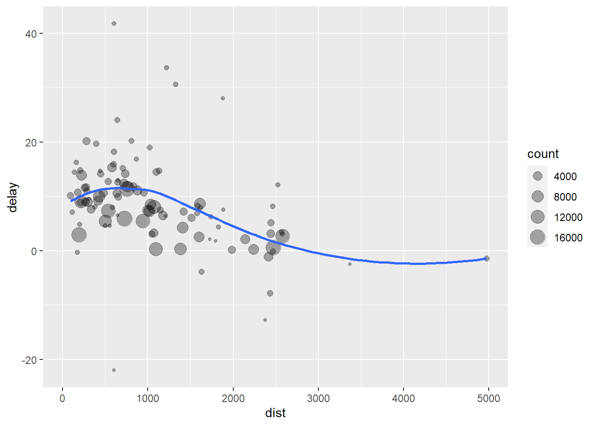
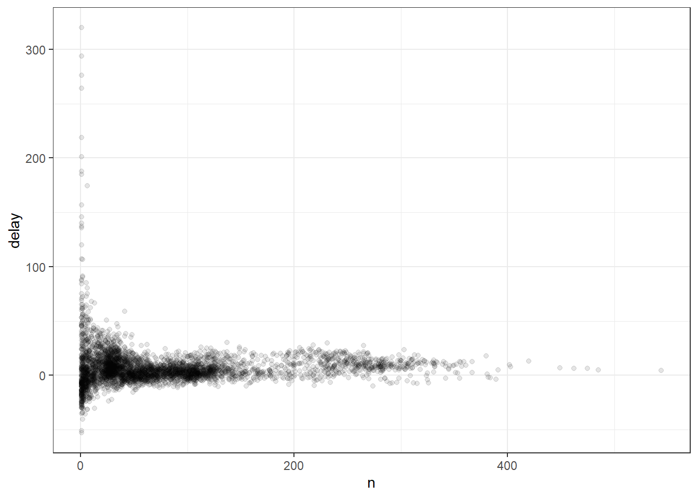
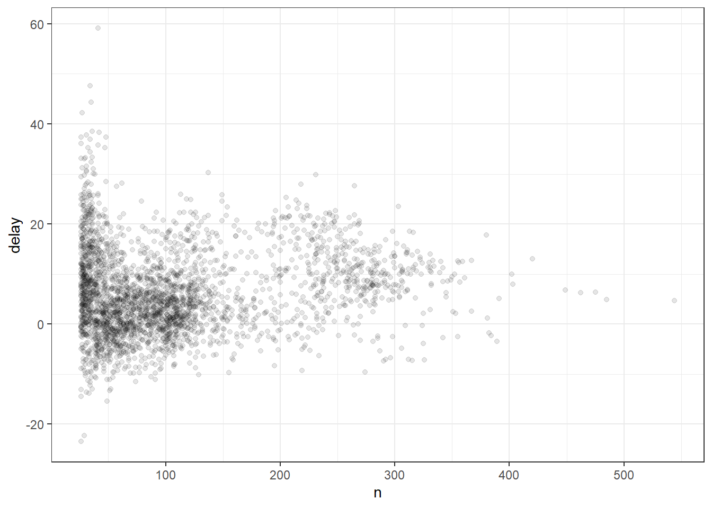

3 Estilo tidyverse
Primero necesitarás instalar algunos paquetes de R. Un paquete R es una colección de funciones, datos y documentación que amplía las capacidades de R base. El uso de paquetes es clave para el uso exitoso de R. La mayoría de los paquetes que aprenderá en este apartado son parte del llamado tidyverse. Los paquetes de tidyverse comparten una filosofía común de programación de datos y R, y están diseñados para trabajar juntos de forma natural.
Puedes instalar tidyverse completo con una sola línea de código:
install.packages("tidyverse")En su propia computadora, escriba esa línea de código en la consola y luego presione Entrar para ejecutarlo. R descargará los paquetes de CRAN y los instalará en su computadora. Si tiene problemas con la instalación, asegúrese de estar conectado a Internet y de que https://cloud.r-project.org/ no esté bloqueado por su firewall o proxy.
No podrá utilizar las funciones, los objetos y los archivos de ayuda de un paquete hasta que lo cargue con library(). Una vez que haya instalado un paquete, puede cargarlo con la función library():
library(tidyverse)## -- Attaching packages --------------------------------------- tidyverse 1.3.1 --## v ggplot2 3.3.5 v purrr 0.3.4
## v tibble 3.1.6 v dplyr 1.0.7
## v tidyr 1.1.3 v stringr 1.4.0
## v readr 2.0.1 v forcats 0.5.1## -- Conflicts ------------------------------------------ tidyverse_conflicts() --
## x dplyr::filter() masks stats::filter()
## x dplyr::lag() masks stats::lag()Esto le indica que tidyverse está cargando los paquetes ggplot2, tibble, tidyr, readr, purrr y dplyr. Estos consideran los núcleo del tidyverse porque los usará en casi todos los análisis.
Los paquetes del tidyverse cambian con bastante frecuencia. Puede ver si hay actualizaciones disponibles y, opcionalmente, instalarlas, ejecutando tidyverse_update().
Toma nota del mensaje de conflictos que se imprime cuando cargas el tidyverse. Te dice que dplyr sobrescribe algunas funciones en base R. Si desea usar la versión base de estas funciones después de cargar dplyr, deberá usar sus nombres completos: stats::filter() y stats::lag()
3.1 Data Transformation con dplyr
La visualización es una herramienta importante para la generación de información, pero es raro que obtenga los datos exactamente en la forma correcta que necesita. A menudo, necesitará crear algunas variables o resúmenes nuevos, o tal vez solo desee cambiar el nombre de las variables o reordenar las observaciones para que sea un poco más fácil trabajar con los datos. Aprenderá a hacer todo eso (¡y más!) en este apartado, que le enseñará cómo transformar sus datos utilizando el paquete dplyr y un nuevo conjunto de datos sobre vuelos que parten de la ciudad de Nueva York en 2013.

En este capítulo, nos centraremos en cómo usar el paquete dplyr, otro miembro central de tidyverse. Ilustraremos las ideas clave usando datos del paquete nycflights13 y usar ggplot2 para ayudarnos a comprender los datos.
library(nycflights13)## Warning: package 'nycflights13' was built under R version 4.1.23.1.1 nycfights13
Para explorar los verbos básicos de manipulación de datos de dplyr, usaremos nycflights13::flights. Este marco de datos contiene los 336,776 vuelos que partieron de la ciudad de Nueva York en 2013. Los datos provienen de la oficina Oficina de Estadísticas de Transporte de EE. UU, y están documentados en ?flights:
flights## # A tibble: 336,776 x 19
## year month day dep_time sched_dep_time dep_delay arr_time sched_arr_time
## <int> <int> <int> <int> <int> <dbl> <int> <int>
## 1 2013 1 1 517 515 2 830 819
## 2 2013 1 1 533 529 4 850 830
## 3 2013 1 1 542 540 2 923 850
## 4 2013 1 1 544 545 -1 1004 1022
## 5 2013 1 1 554 600 -6 812 837
## 6 2013 1 1 554 558 -4 740 728
## 7 2013 1 1 555 600 -5 913 854
## 8 2013 1 1 557 600 -3 709 723
## 9 2013 1 1 557 600 -3 838 846
## 10 2013 1 1 558 600 -2 753 745
## # ... with 336,766 more rows, and 11 more variables: arr_delay <dbl>,
## # carrier <chr>, flight <int>, tailnum <chr>, origin <chr>, dest <chr>,
## # air_time <dbl>, distance <dbl>, hour <dbl>, minute <dbl>, time_hour <dttm>
Es posible que observe que este dataframe se imprima un poco diferente de otros dataframe que podría haber usado en el pasado: solo muestra las primeras filas y todas las columnas que caben en una pantalla. (Para ver el conjunto de datos completo, puede ejecutar View(flights), que abrirá el conjunto de datos en el visor de RStudio). Se imprime de manera diferente porque es un tibble. Tibbles son dataframe, pero ligeramente modificados para que funcionen mejor en tidyverse. Por ahora, no necesita preocuparse por las diferencias; volveremos a tibbles con más detalle en la Parte II del libro de Hadley Wickham y Garrett Grolemund (2017).
También puede haber notado la fila de abreviaturas de tres (o cuatro) letras debajo de los nombres de las columnas. Estos describen el tipo de cada variable:
- int significa enteros.
- dbl significa dobles o números reales.
- chr significa vectores de caracteres o cadenas.
- dttm significa fecha y hora (una fecha + una hora).
Hay otros tres tipos comunes de variables que no se utilizan en este conjunto de datos, pero los encontrará más adelante en el libro de libro de Hadley Wickham y Garrett Grolemund (2017):
- lgl significa vectores lógicos que contienen solo VERDADERO o FALSO.
- fctr significa factores, que R usa para representar categóricos variables con valores posibles fijos.
- date representa fechas.
3.1.2 dplyr Básico
En este capítulo, aprenderá las cinco funciones clave de dplyr que le permiten resolver la gran mayoría de sus desafíos de manipulación de datos:
- Elija observaciones por sus valores (
filter()). - Reordenar las filas (
arrange()). - Elija las variables por sus nombres (
select()). - Crear nuevas variables con funciones de variables existentes (
mutate()). - Colapsar muchos valores en un solo resumen (
summarize())
Todos estos se pueden usar junto con group_by(), que cambia el alcance de cada función de operar en todo el conjunto de datos a operar en él grupo por grupo. Estas seis funciones proporcionan los verbos para un lenguaje de manipulación de datos.
Todos los verbos funcionan de manera similar:
- El primer argumento es un marco de datos.
- Los argumentos siguientes describen qué hacer con el marco de datos, utilizando los nombres de las variables (sin comillas).
- El resultado es un nuevo dataframe.
Juntas, estas propiedades hacen que sea fácil encadenar varios pasos simples para lograr un resultado complejo. Profundicemos y veamos cómo funcionan estos verbos.
3.1.3 Filtrar filas con filter()
filter() te permite filtrar un subconjunto de observaciones según sus valores. El primer argumento es el nombre del data frame. El segundo y los siguientes argumentos son las expresiones que lo filtran.
Por ejemplo, podemos seleccionar todos los vuelos del 1 de enero con:
dplyr::filter(flights, month == 1, day == 1)## # A tibble: 842 x 19
## year month day dep_time sched_dep_time dep_delay arr_time sched_arr_time
## <int> <int> <int> <int> <int> <dbl> <int> <int>
## 1 2013 1 1 517 515 2 830 819
## 2 2013 1 1 533 529 4 850 830
## 3 2013 1 1 542 540 2 923 850
## 4 2013 1 1 544 545 -1 1004 1022
## 5 2013 1 1 554 600 -6 812 837
## 6 2013 1 1 554 558 -4 740 728
## 7 2013 1 1 555 600 -5 913 854
## 8 2013 1 1 557 600 -3 709 723
## 9 2013 1 1 557 600 -3 838 846
## 10 2013 1 1 558 600 -2 753 745
## # ... with 832 more rows, and 11 more variables: arr_delay <dbl>,
## # carrier <chr>, flight <int>, tailnum <chr>, origin <chr>, dest <chr>,
## # air_time <dbl>, distance <dbl>, hour <dbl>, minute <dbl>, time_hour <dttm>Cuando ejecutas esa línea de código, dplyr ejecuta la operación de filtrado y devuelve un nuevo data frame. Las funciones de dplyr nunca modifican su input, por lo que si deseas guardar el resultado, necesitarás usar el operador de asignación, <-:
filter01 <- dplyr::filter(flights, month == 1, day == 1)de otro modo usar el operador “%<>%” de la librería magrittr.
R imprime los resultados o los guarda en una variable. Si desea hacer ambas cosas, puede envolver la tarea entre paréntesis:
(filter02 <- dplyr::filter(flights, month == 12, day == 25))## # A tibble: 719 x 19
## year month day dep_time sched_dep_time dep_delay arr_time sched_arr_time
## <int> <int> <int> <int> <int> <dbl> <int> <int>
## 1 2013 12 25 456 500 -4 649 651
## 2 2013 12 25 524 515 9 805 814
## 3 2013 12 25 542 540 2 832 850
## 4 2013 12 25 546 550 -4 1022 1027
## 5 2013 12 25 556 600 -4 730 745
## 6 2013 12 25 557 600 -3 743 752
## 7 2013 12 25 557 600 -3 818 831
## 8 2013 12 25 559 600 -1 855 856
## 9 2013 12 25 559 600 -1 849 855
## 10 2013 12 25 600 600 0 850 846
## # ... with 709 more rows, and 11 more variables: arr_delay <dbl>,
## # carrier <chr>, flight <int>, tailnum <chr>, origin <chr>, dest <chr>,
## # air_time <dbl>, distance <dbl>, hour <dbl>, minute <dbl>, time_hour <dttm>3.1.3.1 Comparaciones
Para usar el filtrado de manera efectiva, debes saber cómo seleccionar las observaciones que deseas utilizando los operadores de comparación. R proporciona el conjunto estándar: >, >=, <, <=, != (no igual) y == (igual).
Cuando comienzas con R, el error más fácil de cometer es usar = en lugar de == cuando se busca igualdad. Cuando esto suceda, obtendrás un error informativo:
dplyr::filter(flights, month = 1)## Error: Problem with `filter()` input `..1`.
## x Input `..1` is named.
## i This usually means that you've used `=` instead of `==`.
## i Did you mean `month == 1`?Hay otro problema común que puedes encontrar al usar ==: los números de coma flotante. ¡Estos resultados pueden sorprenderte!
sqrt(2)^2 == 2## [1] FALSE1 / 49 * 49 == 1## [1] FALSELas computadoras usan aritmética de precisión finita (obviamente, NO pueden almacenar una cantidad infinita de dígitos), así que recuerda que cada número que observas es una aproximación. En lugar de confiar en ==, usa near() (cercano, en inglés):
near(sqrt(2)^2, 2)## [1] TRUEnear(1 / 49 * 49, 1)## [1] TRUE3.1.3.2 Operadores lógicos
Si tienes múltiples argumentos para filter() estos se combinan con “y”: cada expresión debe ser verdadera para que una fila se incluya en el output. Para otros tipos de combinaciones necesitarás usar operadores Booleanos: & es “y”, | es “o”, y ! es “no”. La siguiente figura
muestra el conjunto completo de operaciones Booleanas.

El siguiente código sirve para encontrar todos los vuelos que partieron en noviembre o diciembre:
dplyr::filter(flights, month == 11 | month == 12)## # A tibble: 55,403 x 19
## year month day dep_time sched_dep_time dep_delay arr_time sched_arr_time
## <int> <int> <int> <int> <int> <dbl> <int> <int>
## 1 2013 11 1 5 2359 6 352 345
## 2 2013 11 1 35 2250 105 123 2356
## 3 2013 11 1 455 500 -5 641 651
## 4 2013 11 1 539 545 -6 856 827
## 5 2013 11 1 542 545 -3 831 855
## 6 2013 11 1 549 600 -11 912 923
## 7 2013 11 1 550 600 -10 705 659
## 8 2013 11 1 554 600 -6 659 701
## 9 2013 11 1 554 600 -6 826 827
## 10 2013 11 1 554 600 -6 749 751
## # ... with 55,393 more rows, and 11 more variables: arr_delay <dbl>,
## # carrier <chr>, flight <int>, tailnum <chr>, origin <chr>, dest <chr>,
## # air_time <dbl>, distance <dbl>, hour <dbl>, minute <dbl>, time_hour <dttm>El orden de las operaciones no funciona como en español. No puedes escribir filter(flights, month == (11 | 12)), que literalmente puede traducirse como “encuentra todos los vuelos que partieron en noviembre o diciembre”. En cambio, encontrará todos los meses que son iguales a 11 | 12, una expresión que resulta en ‘TRUE’ (verdadero). En un contexto numérico (como aquí), ‘TRUE’ se convierte en uno, por lo que encuentra todos los vuelos en enero, NO en noviembre o diciembre. ¡Esto es bastante confuso!
Una manera rápida y útil para resolver este problema es x %in% y (es decir, x en y). Esto seleccionará cada fila donde x es uno de los valores en y. Podríamos usarlo para reescribir el código de arriba:
dplyr::filter(flights, month %in% c(11, 12))## # A tibble: 55,403 x 19
## year month day dep_time sched_dep_time dep_delay arr_time sched_arr_time
## <int> <int> <int> <int> <int> <dbl> <int> <int>
## 1 2013 11 1 5 2359 6 352 345
## 2 2013 11 1 35 2250 105 123 2356
## 3 2013 11 1 455 500 -5 641 651
## 4 2013 11 1 539 545 -6 856 827
## 5 2013 11 1 542 545 -3 831 855
## 6 2013 11 1 549 600 -11 912 923
## 7 2013 11 1 550 600 -10 705 659
## 8 2013 11 1 554 600 -6 659 701
## 9 2013 11 1 554 600 -6 826 827
## 10 2013 11 1 554 600 -6 749 751
## # ... with 55,393 more rows, and 11 more variables: arr_delay <dbl>,
## # carrier <chr>, flight <int>, tailnum <chr>, origin <chr>, dest <chr>,
## # air_time <dbl>, distance <dbl>, hour <dbl>, minute <dbl>, time_hour <dttm>A veces puedes simplificar subconjuntos complicados al recordar la ley de De Morgan: !(x & y) es lo mismo que !x | !y, y !(x | y) es lo mismo que **!x & !y*. Por ejemplo, si deseas encontrar vuelos que no se retrasaron (en llegada o partida) en más de dos horas, puedes usar cualquiera de los dos filtros siguientes:
dplyr::filter(flights, !(arr_delay > 120 | dep_delay > 120))## # A tibble: 316,050 x 19
## year month day dep_time sched_dep_time dep_delay arr_time sched_arr_time
## <int> <int> <int> <int> <int> <dbl> <int> <int>
## 1 2013 1 1 517 515 2 830 819
## 2 2013 1 1 533 529 4 850 830
## 3 2013 1 1 542 540 2 923 850
## 4 2013 1 1 544 545 -1 1004 1022
## 5 2013 1 1 554 600 -6 812 837
## 6 2013 1 1 554 558 -4 740 728
## 7 2013 1 1 555 600 -5 913 854
## 8 2013 1 1 557 600 -3 709 723
## 9 2013 1 1 557 600 -3 838 846
## 10 2013 1 1 558 600 -2 753 745
## # ... with 316,040 more rows, and 11 more variables: arr_delay <dbl>,
## # carrier <chr>, flight <int>, tailnum <chr>, origin <chr>, dest <chr>,
## # air_time <dbl>, distance <dbl>, hour <dbl>, minute <dbl>, time_hour <dttm>dplyr::filter(flights, arr_delay <= 120, dep_delay <= 120)## # A tibble: 316,050 x 19
## year month day dep_time sched_dep_time dep_delay arr_time sched_arr_time
## <int> <int> <int> <int> <int> <dbl> <int> <int>
## 1 2013 1 1 517 515 2 830 819
## 2 2013 1 1 533 529 4 850 830
## 3 2013 1 1 542 540 2 923 850
## 4 2013 1 1 544 545 -1 1004 1022
## 5 2013 1 1 554 600 -6 812 837
## 6 2013 1 1 554 558 -4 740 728
## 7 2013 1 1 555 600 -5 913 854
## 8 2013 1 1 557 600 -3 709 723
## 9 2013 1 1 557 600 -3 838 846
## 10 2013 1 1 558 600 -2 753 745
## # ... with 316,040 more rows, and 11 more variables: arr_delay <dbl>,
## # carrier <chr>, flight <int>, tailnum <chr>, origin <chr>, dest <chr>,
## # air_time <dbl>, distance <dbl>, hour <dbl>, minute <dbl>, time_hour <dttm>Una característica importante de R que puede hacer que la comparación sea difícil son los valores faltantes, o NA’s (del inglés “no disponibles”). NA representa un valor desconocido, lo que hace que los valores perdidos sean “contagiosos”: casi cualquier operación que involucre un valor desconocido también será desconocida.
Si deseas determinar si falta un valor, usa is.na():
is.na(5)## [1] FALSEis.na(NA)## [1] TRUEfilter() solo incluye filas donde la condición es TRUE; excluye tanto los valores FALSE como NA. Si deseas conservar valores perdidos, solicítalos explícitamente:
df <- tibble(x = c(1, NA, 3))
dplyr::filter(df, x > 1)## # A tibble: 1 x 1
## x
## <dbl>
## 1 3dplyr::filter(df, is.na(x) | x > 1)## # A tibble: 2 x 1
## x
## <dbl>
## 1 NA
## 2 3Siempre que empieces a usar en filter() expresiones complejas que tengan varias partes, considera convertirlas en variables explícitas. Eso hace que sea mucho más fácil verificar tu trabajo. Aprenderás cómo crear nuevas variables en breve.
Ejercicios
1.Encuentra todos los vuelos que:
- Tuvieron un retraso de llegada de dos o más horas
- Volaron a Houston (IAH oHOU)
- Fueron operados por United, American o Delta
- Partieron en invierno del hemisferio sur (julio, agosto y septiembre)
- Llegaron más de dos horas tarde, pero no salieron tarde
- Se retrasaron por lo menos una hora, pero repusieron más de 30 minutos en vuelo
- Partieron entre la medianoche y las 6 a.m. (incluyente)
2. Otra función de dplyr que es útil para usar filtros es between(). ¿Qué hace? ¿Puedes usarla para simplificar el código necesario para responder a los desafíos anteriores?
3. ¿Cuántos vuelos tienen datos faltantes en horario_salida? ¿Qué otras variables tienen valores faltantes? ¿Qué representan estas filas?
4. ¿Por qué NA^0 no es faltante? ¿Por qué NA | TRUE no es faltante? ¿Por qué FALSE & NA no es faltante? ¿Puedes descubrir la regla general? (¡NA * 0 es un contraejemplo complicado!)
3.1.4 Reordenar las filas con arrange()
arrange()** funciona de manera similar afilter()` excepto que en lugar de seleccionar filas, cambia su orden. La función toma un dataframe** y un conjunto de nombres de columnas (o expresiones más complicadas) para ordenar según ellas. Si proporcionas más de un nombre de columna, cada columna adicional se utilizará para romper empates en los valores de las columnas anteriores:
arrange(flights, year, month, day)## # A tibble: 336,776 x 19
## year month day dep_time sched_dep_time dep_delay arr_time sched_arr_time
## <int> <int> <int> <int> <int> <dbl> <int> <int>
## 1 2013 1 1 517 515 2 830 819
## 2 2013 1 1 533 529 4 850 830
## 3 2013 1 1 542 540 2 923 850
## 4 2013 1 1 544 545 -1 1004 1022
## 5 2013 1 1 554 600 -6 812 837
## 6 2013 1 1 554 558 -4 740 728
## 7 2013 1 1 555 600 -5 913 854
## 8 2013 1 1 557 600 -3 709 723
## 9 2013 1 1 557 600 -3 838 846
## 10 2013 1 1 558 600 -2 753 745
## # ... with 336,766 more rows, and 11 more variables: arr_delay <dbl>,
## # carrier <chr>, flight <int>, tailnum <chr>, origin <chr>, dest <chr>,
## # air_time <dbl>, distance <dbl>, hour <dbl>, minute <dbl>, time_hour <dttm>Usa desc() para reordenar por una columna en orden descendente:
arrange(flights, desc(arr_delay))## # A tibble: 336,776 x 19
## year month day dep_time sched_dep_time dep_delay arr_time sched_arr_time
## <int> <int> <int> <int> <int> <dbl> <int> <int>
## 1 2013 1 9 641 900 1301 1242 1530
## 2 2013 6 15 1432 1935 1137 1607 2120
## 3 2013 1 10 1121 1635 1126 1239 1810
## 4 2013 9 20 1139 1845 1014 1457 2210
## 5 2013 7 22 845 1600 1005 1044 1815
## 6 2013 4 10 1100 1900 960 1342 2211
## 7 2013 3 17 2321 810 911 135 1020
## 8 2013 7 22 2257 759 898 121 1026
## 9 2013 12 5 756 1700 896 1058 2020
## 10 2013 5 3 1133 2055 878 1250 2215
## # ... with 336,766 more rows, and 11 more variables: arr_delay <dbl>,
## # carrier <chr>, flight <int>, tailnum <chr>, origin <chr>, dest <chr>,
## # air_time <dbl>, distance <dbl>, hour <dbl>, minute <dbl>, time_hour <dttm>Los valores faltantes siempre se ordenan al final:
df <- tibble(x = c(5, 2, NA))
arrange(df, x)## # A tibble: 3 x 1
## x
## <dbl>
## 1 2
## 2 5
## 3 NAarrange(df, desc(x))## # A tibble: 3 x 1
## x
## <dbl>
## 1 5
## 2 2
## 3 NAEjercicios
1. ¿Cómo podrías usar arrange() para ordenar todos los valores faltantes al comienzo? (Sugerencia: usa is.na()).
2. Ordena vuelos para encontrar los vuelos más retrasados. Encuentra los vuelos que salieron más temprano.
3. Ordena vuelos para encontrar los vuelos más rápidos (que viajaron a mayor velocidad).
4. ¿Cuáles vuelos viajaron más lejos? ¿Cuál viajó más cerca?
3.1.5 Seleccionar columnas con select()
No es raro obtener conjuntos de datos con cientos o incluso miles de variables. En este caso, el primer desafío a menudo se reduce a las variables que realmente te interesan. select() te permite seleccionar rápidamente un subconjunto útil utilizando operaciones basadas en los nombres de las variables.
select() no es muy útil con los datos de los vuelos porque solo tenemos 19 variables, pero de todos modos se entiende la idea general:
# Seleccionar columnas por nombre
dplyr::select(flights, year, month, day)## # A tibble: 336,776 x 3
## year month day
## <int> <int> <int>
## 1 2013 1 1
## 2 2013 1 1
## 3 2013 1 1
## 4 2013 1 1
## 5 2013 1 1
## 6 2013 1 1
## 7 2013 1 1
## 8 2013 1 1
## 9 2013 1 1
## 10 2013 1 1
## # ... with 336,766 more rows# Seleccionar todas las columnas entre anio y dia (incluyente)
dplyr::select(flights, year:day)## # A tibble: 336,776 x 3
## year month day
## <int> <int> <int>
## 1 2013 1 1
## 2 2013 1 1
## 3 2013 1 1
## 4 2013 1 1
## 5 2013 1 1
## 6 2013 1 1
## 7 2013 1 1
## 8 2013 1 1
## 9 2013 1 1
## 10 2013 1 1
## # ... with 336,766 more rows# Seleccionar todas las columnas excepto aquellas entre anio en dia (incluyente)
dplyr::select(flights, -(year:day))## # A tibble: 336,776 x 16
## dep_time sched_dep_time dep_delay arr_time sched_arr_time arr_delay carrier
## <int> <int> <dbl> <int> <int> <dbl> <chr>
## 1 517 515 2 830 819 11 UA
## 2 533 529 4 850 830 20 UA
## 3 542 540 2 923 850 33 AA
## 4 544 545 -1 1004 1022 -18 B6
## 5 554 600 -6 812 837 -25 DL
## 6 554 558 -4 740 728 12 UA
## 7 555 600 -5 913 854 19 B6
## 8 557 600 -3 709 723 -14 EV
## 9 557 600 -3 838 846 -8 B6
## 10 558 600 -2 753 745 8 AA
## # ... with 336,766 more rows, and 9 more variables: flight <int>,
## # tailnum <chr>, origin <chr>, dest <chr>, air_time <dbl>, distance <dbl>,
## # hour <dbl>, minute <dbl>, time_hour <dttm>Hay una serie de funciones auxiliares que puedes usar dentro de select():
starts_with("abc"): coincide con los nombres que comienzan con “abc.”ends_with("xyz"): coincide con los nombres que terminan con “xyz.”contains("ijk"): coincide con los nombres que contienen “ijk.”matches("(.)\\1"): selecciona variables que coinciden con una expresión regular (regex). Esta en particular coincide con cualquier variable que contenga caracteres repetidos.num_range("x", 1:3): coincide con x1,x2 y x3.
Consulta ?select para ver más detalles.
select() se puede usar para cambiar el nombre de las variables, pero rara vez es útil porque descarta todas las variables que no se mencionan explícitamente. En su lugar, utiliza rename(), que es una variante de select() que mantiene todas las variables que no se mencionan explícitamente:
names(flights)## [1] "year" "month" "day" "dep_time"
## [5] "sched_dep_time" "dep_delay" "arr_time" "sched_arr_time"
## [9] "arr_delay" "carrier" "flight" "tailnum"
## [13] "origin" "dest" "air_time" "distance"
## [17] "hour" "minute" "time_hour"# new name = old name
df <- rename(flights, tail_num = tailnum)
names(df)## [1] "year" "month" "day" "dep_time"
## [5] "sched_dep_time" "dep_delay" "arr_time" "sched_arr_time"
## [9] "arr_delay" "carrier" "flight" "tail_num"
## [13] "origin" "dest" "air_time" "distance"
## [17] "hour" "minute" "time_hour"Otra opción es usar select() junto con el auxiliar everything() (todo, en inglés). Esto es útil si tienes un grupo de variables que te gustaría mover al comienzo del data frame.
dplyr::select(flights, time_hour, air_time, everything())## # A tibble: 336,776 x 19
## time_hour air_time year month day dep_time sched_dep_time
## <dttm> <dbl> <int> <int> <int> <int> <int>
## 1 2013-01-01 05:00:00 227 2013 1 1 517 515
## 2 2013-01-01 05:00:00 227 2013 1 1 533 529
## 3 2013-01-01 05:00:00 160 2013 1 1 542 540
## 4 2013-01-01 05:00:00 183 2013 1 1 544 545
## 5 2013-01-01 06:00:00 116 2013 1 1 554 600
## 6 2013-01-01 05:00:00 150 2013 1 1 554 558
## 7 2013-01-01 06:00:00 158 2013 1 1 555 600
## 8 2013-01-01 06:00:00 53 2013 1 1 557 600
## 9 2013-01-01 06:00:00 140 2013 1 1 557 600
## 10 2013-01-01 06:00:00 138 2013 1 1 558 600
## # ... with 336,766 more rows, and 12 more variables: dep_delay <dbl>,
## # arr_time <int>, sched_arr_time <int>, arr_delay <dbl>, carrier <chr>,
## # flight <int>, tailnum <chr>, origin <chr>, dest <chr>, distance <dbl>,
## # hour <dbl>, minute <dbl>Ejercicios
1. Haz una lluvia de ideas sobre tantas maneras como sea posible para seleccionar dep_time, dep_delay, arr_time, and arr_delay de flights.
2. ¿Qué sucede si incluyes el nombre de una variable varias veces en una llamada a select()?
3. ¿Qué hace la función any_of()? ¡¿Por qué podría ser útil en conjunto con este vector?
vars <- c("year", "month", "day", "dep_delay", "arr_delay")4. ¿Te sorprende el resultado de ejecutar el siguiente código? ¿Cómo tratan por defecto las funciones auxiliares de select() a las palabras en mayúsculas o en minúsculas? ¿Cómo puedes cambiar ese comportamiento predeterminado?
dplyr::select(flights, contains("TIME"))3.1.6 Añadir nuevas variables con mutate()
Además de seleccionar conjuntos de columnas existentes, a menudo es útil crear nuevas columnas en función de columnas existentes. Ese es el trabajo de mutate() (del inglés mutar o transformar).
mutate() siempre agrega nuevas columnas al final de un conjunto de datos, así que comenzaremos creando un conjunto de datos más pequeño para que podamos ver las nuevas variables. Recuerda que cuando usas RStudio, la manera más fácil de ver todas las columnas es View().
flights_sml <-
dplyr::select(
flights,
year:day,
ends_with("delay"),
distance, air_time
)
mutate(
flights_sml,
gain = arr_delay - dep_delay,
speed = distance / (air_time * 60)
)## # A tibble: 336,776 x 9
## year month day dep_delay arr_delay distance air_time gain speed
## <int> <int> <int> <dbl> <dbl> <dbl> <dbl> <dbl> <dbl>
## 1 2013 1 1 2 11 1400 227 9 0.103
## 2 2013 1 1 4 20 1416 227 16 0.104
## 3 2013 1 1 2 33 1089 160 31 0.113
## 4 2013 1 1 -1 -18 1576 183 -17 0.144
## 5 2013 1 1 -6 -25 762 116 -19 0.109
## 6 2013 1 1 -4 12 719 150 16 0.0799
## 7 2013 1 1 -5 19 1065 158 24 0.112
## 8 2013 1 1 -3 -14 229 53 -11 0.0720
## 9 2013 1 1 -3 -8 944 140 -5 0.112
## 10 2013 1 1 -2 8 733 138 10 0.0885
## # ... with 336,766 more rowsTen en cuenta que puedes hacer referencia a las columnas que acabas de crear:
mutate(
flights_sml,
gain = arr_delay - dep_delay,
hours = air_time / 60,
gain_per_hour = gain / hours
)## # A tibble: 336,776 x 10
## year month day dep_delay arr_delay distance air_time gain hours
## <int> <int> <int> <dbl> <dbl> <dbl> <dbl> <dbl> <dbl>
## 1 2013 1 1 2 11 1400 227 9 3.78
## 2 2013 1 1 4 20 1416 227 16 3.78
## 3 2013 1 1 2 33 1089 160 31 2.67
## 4 2013 1 1 -1 -18 1576 183 -17 3.05
## 5 2013 1 1 -6 -25 762 116 -19 1.93
## 6 2013 1 1 -4 12 719 150 16 2.5
## 7 2013 1 1 -5 19 1065 158 24 2.63
## 8 2013 1 1 -3 -14 229 53 -11 0.883
## 9 2013 1 1 -3 -8 944 140 -5 2.33
## 10 2013 1 1 -2 8 733 138 10 2.3
## # ... with 336,766 more rows, and 1 more variable: gain_per_hour <dbl>Si solo quieres conservar las nuevas variables, usa transmute():
transmute(
flights,
gain = arr_delay - dep_delay,
hours = air_time / 60,
gain_per_hour = gain / hours
)## # A tibble: 336,776 x 3
## gain hours gain_per_hour
## <dbl> <dbl> <dbl>
## 1 9 3.78 2.38
## 2 16 3.78 4.23
## 3 31 2.67 11.6
## 4 -17 3.05 -5.57
## 5 -19 1.93 -9.83
## 6 16 2.5 6.4
## 7 24 2.63 9.11
## 8 -11 0.883 -12.5
## 9 -5 2.33 -2.14
## 10 10 2.3 4.35
## # ... with 336,766 more rows3.1.6.1 Funciones de creación útiles
Hay muchas funciones para crear nuevas variables que puedes usar con mutate(). La propiedad clave es que la función debe ser vectorizada: debe tomar un vector de valores como input, y devolver un vector con el mismo número de valores como output. No hay forma de enumerar todas las posibles funciones que podrías usar, pero aquí hay una selección de funciones que frecuentemente son útiles:
Operadores aritméticos:
+,-,*,/,^. Todos están vectorizados usando las llamadas “reglas de reciclaje”. Si un parámetro es más corto que el otro, se extenderá automáticamente para tener la misma longitud. Esto es muy útil cuando uno de los argumentos es un solo número:air_time / 60,hours * 60 + minute, etc. Los operadores aritméticos también son útiles junto con las funciones de agregar que aprenderás más adelante. Por ejemplo,x / sum(x)calcula la proporción de un total, yy - mean(y)calcula la diferencia de la media.Aritmética modular:
%/%(división entera) y%%(resto), dondex == y * (x %/% y) + (x %% y). La aritmética modular es una herramienta útil porque te permite dividir enteros en partes. Por ejemplo, en el conjunto de datos de vuelos, puedes calcular hora y minutos dedep_timecon:
transmute(
flights,
dep_time,
hour = dep_time %/% 100,
minute = dep_time %% 100
)## # A tibble: 336,776 x 3
## dep_time hour minute
## <int> <dbl> <dbl>
## 1 517 5 17
## 2 533 5 33
## 3 542 5 42
## 4 544 5 44
## 5 554 5 54
## 6 554 5 54
## 7 555 5 55
## 8 557 5 57
## 9 557 5 57
## 10 558 5 58
## # ... with 336,766 more rowsLogaritmos:
log(),log2(),log10(). Los logaritmos son increíblemente útiles como transformación para trabajar con datos con múltiples órdenes de magnitud. También convierten las relaciones multiplicativas en aditivas, una característica que retomaremos en los capítulos sobre modelos. En igualdad de condiciones, recomendamos usarlog2()porque es más fácil de interpretar: una diferencia de 1 en la escala de registro corresponde a la duplicación de la escala original y una diferencia de -1 corresponde a dividir a la mitad.Rezagos:
lead()ylag()te permiten referirte a un valor adelante o un valor atrás (con rezago). Esto te permite calcular las diferencias móviles (por ejemplo,x - lag(x)) o encontrar cuándo cambian los valores(x! = lag (x)). Estos comandos son más útiles cuando se utilizan junto congroup_by(), algo que aprenderás en breve.
(x <- 1:10)## [1] 1 2 3 4 5 6 7 8 9 10lag(x)## [1] NA 1 2 3 4 5 6 7 8 9lead(x)## [1] 2 3 4 5 6 7 8 9 10 NA- Agregados acumulativos y móviles: R proporciona funciones para ejecutar sumas, productos, mínimos y máximos:
cumsum(),cumprod(),cummin(),cummax(); dplyr, por su parte, proporcionacummean()para las medias acumuladas. Si necesitas calcular agregados móviles (es decir, una suma calculada en una ventana móvil), prueba el paquete RcppRoll.
x## [1] 1 2 3 4 5 6 7 8 9 10cumsum(x)## [1] 1 3 6 10 15 21 28 36 45 55cummean(x)## [1] 1.0 1.5 2.0 2.5 3.0 3.5 4.0 4.5 5.0 5.5Comparaciones lógicas:
<,<=,>,>=,!=sobre las cuales aprendiste antes. Si estás haciendo una secuencia compleja de operaciones lógicas, es a menudo una buena idea almacenar los valores provisionales en nuevas variables para que puedas comprobar que cada paso funciona como se espera.Ordenamiento: hay una serie de funciones de ordenamiento (ranking), pero deberías comenzar con
min_rank(). Esta función realiza el tipo más común de ordenamiento (por ejemplo, primero, segundo, tercero, etc.). El valor predeterminado otorga la menor posición a los valores más pequeños; usadesc(x)para dar la menor posición a los valores más grandes.
y <- c (1, 2, 2, NA, 3, 4)
min_rank(y)## [1] 1 2 2 NA 4 5min_rank(desc(y))## [1] 5 3 3 NA 2 1- Si
min_rank()no hace lo que necesitas, consulta las variantesrow_number(),dense_rank(),percent_rank(),cume_dist(),quantile(). Revisa sus páginas de ayuda para más detalles.
row_number(y)## [1] 1 2 3 NA 4 5dense_rank(y)## [1] 1 2 2 NA 3 4percent_rank(y)## [1] 0.00 0.25 0.25 NA 0.75 1.00cume_dist(y)## [1] 0.2 0.6 0.6 NA 0.8 1.0Ejercicios
1. Las variables horario_salida y salida_programada tienen un formato conveniente para leer, pero es difícil realizar cualquier cálculo con ellas porque no son realmente números continuos. Transfórmalas hacia un formato más conveniente como número de minutos desde la medianoche.
2. Compara tiempo_vuelo con horario_llegada - horario_salida. ¿Qué esperas ver? ¿Qué ves? ¿Qué necesitas hacer para arreglarlo?
3. Compara horario_salida, salida_programada, y atraso_salida. ¿Cómo esperarías que esos tres números estén relacionados?
4. Encuentra los 10 vuelos más retrasados utilizando una función de ordenamiento. ¿Cómo quieres manejar los empates? Lee atentamente la documentación de min_rank().
5. ¿Qué devuelve 1:3 + 1:10? ¿Por qué?
6. ¿Qué funciones trigonométricas proporciona R?
3.1.7 Resúmenes agrupados con summarise()
El último verbo clave es summarise() (resumir, en inglés). Se encarga de colapsar un data frame en una sola fila:
summarize(flights, delay = mean(dep_delay, na.rm = TRUE))## # A tibble: 1 x 1
## delay
## <dbl>
## 1 12.6summarise() no es muy útil a menos que lo enlacemos con group_by(). Esto cambia la unidad de análisis del conjunto de datos completo a grupos individuales. Luego, cuando uses los verbos dplyr en un data frame agrupado, estos se aplicarán automáticamente “por grupo”. Por ejemplo, si aplicamos exactamente el mismo código a un dataframe agrupado por fecha, obtenemos el retraso promedio por fecha:
by_day <- group_by(flights, year, month, day)
summarize(by_day, delay = mean(dep_delay, na.rm = TRUE))## `summarise()` has grouped output by 'year', 'month'. You can override using the `.groups` argument.## # A tibble: 365 x 4
## # Groups: year, month [12]
## year month day delay
## <int> <int> <int> <dbl>
## 1 2013 1 1 11.5
## 2 2013 1 2 13.9
## 3 2013 1 3 11.0
## 4 2013 1 4 8.95
## 5 2013 1 5 5.73
## 6 2013 1 6 7.15
## 7 2013 1 7 5.42
## 8 2013 1 8 2.55
## 9 2013 1 9 2.28
## 10 2013 1 10 2.84
## # ... with 355 more rowsJuntos group_by() y summarise() proporcionan una de las herramientas que más comúnmente usarás cuando trabajes con dplyr: resúmenes agrupados. Pero antes de ir más allá con esto, tenemos que introducir una idea nueva y poderosa: el pipe (pronunciado /paip/, que en inglés significa ducto o tubería).
3.2 Combinación de múltiples operaciones con el pipe
Imagina que queremos explorar la relación entre la distancia y el atraso promedio para cada ubicación. Usando lo que sabes acerca de dplyr, podrías escribir un código como este:
by_dest <- group_by(flights, dest)
delay <-
summarize(
by_dest,
count = n(),
dist = mean(distance, na.rm = TRUE),
delay = mean(arr_delay, na.rm = TRUE)
)
# Parece que las demoras aumentan con las distancias hasta ~ 750 millas
# y luego disminuyen. ¿Tal vez a medida que los vuelos se hacen más
# largos, hay más habilidad para compensar las demoras en el aire?
ggplot(data = delay, mapping = aes(x = dist, y = delay)) +
geom_point(aes(size = count), alpha = 1/3) +
geom_smooth(se = FALSE)## `geom_smooth()` using method = 'loess' and formula 'y ~ x'
Hay tres pasos para preparar esta información:
- Agrupar los vuelos por destino.
- Resumir para calcular la distancia, la demora promedio y el número de vuelos en cada grupo.
- Filtrar para eliminar puntos ruidosos y el aeropuerto de Honolulu, que está casi dos veces más lejos que el próximo aeropuerto más cercano.
Es un poco frustrante escribir este código porque tenemos que dar un nombre a cada data frame intermedio, incluso si el dataframe en sí mismo no nos importa. Nombrar cosas es difícil y dilata el tiempo de nuestro análisis.
Hay otra forma de abordar el mismo problema con el pipe, %>%:
delays <- flights %>%
group_by(dest) %>%
summarise(
count = n(),
dist = mean(distance, na.rm = TRUE),
delay = mean(arr_delay, na.rm = TRUE)
) %>%
filter(count > 20, dest != "HNL")Este código se enfoca en las transformaciones, no en lo que se está transformando, lo que hace que sea más fácil de leer. Puedes leerlo como una serie de declaraciones imperativas: agrupa, luego resume y luego filtra. Como sugiere esta lectura, una buena forma de pronunciar %>% cuando se lee el código es “luego”.
Lo que ocurre detrás del código, es que x %>% f(y) se convierte en f(x, y), y x %>% f(y) %>% g(z) se convierte en g(f(x, y), z) y así sucesivamente. Puedes usar el pipe para reescribir múltiples operaciones de forma que puedas leer de izquierda a derecha, de arriba hacia abajo. Usaremos pipes con frecuencia a partir de ahora porque mejora considerablemente la legibilidad del código. Volveremos a este tema con más detalles en pipes.
Trabajar con el pipe es uno de los criterios clave para pertenecer al tidyverse. La única excepción es ggplot2: se escribió antes de que se descubriera el pipe. Lamentablemente, la siguiente iteración de ggplot2, ggvis, que sí utiliza el pipe, aún no está lista para el horario estelar.
3.2.1 Valores faltantes
Es posible que te hayas preguntado sobre el argumento na.rm que utilizamos anteriormente. ¿Qué pasa si no lo configuramos?
flights %>%
group_by(year, month, day) %>%
summarise(mean = mean(dep_delay))## `summarise()` has grouped output by 'year', 'month'. You can override using the `.groups` argument.## # A tibble: 365 x 4
## # Groups: year, month [12]
## year month day mean
## <int> <int> <int> <dbl>
## 1 2013 1 1 NA
## 2 2013 1 2 NA
## 3 2013 1 3 NA
## 4 2013 1 4 NA
## 5 2013 1 5 NA
## 6 2013 1 6 NA
## 7 2013 1 7 NA
## 8 2013 1 8 NA
## 9 2013 1 9 NA
## 10 2013 1 10 NA
## # ... with 355 more rows¡Obtenemos muchos valores faltantes! Esto se debe a que las funciones de agregación obedecen la regla habitual de valores faltantes: si hay uno en el input, el output también será un valor faltante. Afortunadamente, todas las funciones de agregación tienen un argumento na.rm que elimina los valores faltantes antes del cálculo:
flights %>%
group_by(year, month, day) %>%
summarise(mean = mean(dep_delay, na.rm = TRUE))## `summarise()` has grouped output by 'year', 'month'. You can override using the `.groups` argument.## # A tibble: 365 x 4
## # Groups: year, month [12]
## year month day mean
## <int> <int> <int> <dbl>
## 1 2013 1 1 11.5
## 2 2013 1 2 13.9
## 3 2013 1 3 11.0
## 4 2013 1 4 8.95
## 5 2013 1 5 5.73
## 6 2013 1 6 7.15
## 7 2013 1 7 5.42
## 8 2013 1 8 2.55
## 9 2013 1 9 2.28
## 10 2013 1 10 2.84
## # ... with 355 more rowsEn este caso, en el que los valores faltantes representan vuelos cancelados, también podríamos abordar el problema eliminando primero este tipo de vuelos. Guardaremos este conjunto de datos para poder reutilizarlo en los siguientes ejemplos.
not_cancelled <- flights %>%
filter(!is.na(dep_delay), !is.na(arr_delay))
not_cancelled %>%
group_by(year, month, day) %>%
summarise(mean = mean(dep_delay))## `summarise()` has grouped output by 'year', 'month'. You can override using the `.groups` argument.## # A tibble: 365 x 4
## # Groups: year, month [12]
## year month day mean
## <int> <int> <int> <dbl>
## 1 2013 1 1 11.4
## 2 2013 1 2 13.7
## 3 2013 1 3 10.9
## 4 2013 1 4 8.97
## 5 2013 1 5 5.73
## 6 2013 1 6 7.15
## 7 2013 1 7 5.42
## 8 2013 1 8 2.56
## 9 2013 1 9 2.30
## 10 2013 1 10 2.84
## # ... with 355 more rows3.2.1.1 Conteos
Siempre que realices una agregación, es una buena idea incluir un conteo (n()) o un recuento de valores no faltantes (sum(!is.na(x))). De esta forma, puedes verificar que no estás sacando conclusiones basadas en cantidades muy pequeñas de datos. Por ejemplo, veamos los aviones (identificados por su número de cola) que tienen las demoras promedio más altas:
delays <- not_cancelled %>%
group_by(tailnum) %>%
summarise(
delay = mean(arr_delay)
)
ggplot(data = delays, mapping = aes(x = delay)) +
geom_freqpoly(binwidth = 10) +
theme_bw()
La historia es en realidad un poco más matizada. Podemos obtener más información si hacemos un diagrama de dispersión del número de vuelos contra la demora promedio:
delays <- not_cancelled %>%
group_by(tailnum) %>%
summarise(
delay = mean(arr_delay, na.rm = TRUE),
n = n()
)
ggplot(data = delays, mapping = aes(x = n, y = delay)) +
geom_point(alpha = 1/10) +
theme_bw()
No es sorprendente que haya una mayor variación en el promedio de retraso cuando hay pocos vuelos. La forma de este gráfico es muy característica: cuando trazas un promedio (o cualquier otra medida de resumen) contra el tamaño del grupo, verás que la variación decrece a medida que el tamaño de muestra aumenta.
Cuando se observa este tipo de gráficos, resulta útil eliminar los grupos con menor número de observaciones, ya que puedes ver más del patrón y menos de la variación extrema de los grupos pequeños. Esto es lo que hace el siguiente bloque de código. También te ofrece una manera muy útil para integrar ggplot2 en el flujo de trabajo de dplyr. Es un poco incómodo tener que cambiar de %>% a +, pero una vez que entiendas el código, verás que es bastante conveniente.
delays %>%
filter(n > 25) %>%
ggplot(mapping = aes(x = n, y = delay)) +
geom_point(alpha = 1/10) +
theme_bw()
Hay otra variación común de este tipo de patrón. Veamos cómo el rendimiento promedio de los bateadores en el béisbol está relacionado con el número de veces que les toca batear. Aquí utilizaremos el conjunto de datos de bateadores para calcular el promedio de bateo (número de bateos / número de intentos) de cada jugador de béisbol de las Grandes Ligas.
Cuando graficamos la habilidad del bateador (medido por el promedio de bateo, pb) contra el número de oportunidades para golpear la pelota (medido por el tiempo al bate,ab), verás dos patrones:
Como en el ejemplo anterior, la variación en nuestro estadístico de resumen disminuye a medida que obtenemos más observaciones.
Existe una correlación positiva entre la habilidad (pb) y las oportunidades para golpear la pelota (ab). Esto se debe a que los equipos controlan quién puede jugar y, obviamente, elegirán a sus mejores jugadores.
# Convert to a tibble so it prints nicely
bateo <- as_tibble(datos::bateadores)
rendimiento_bateadores <- bateo %>%
group_by(id_jugador) %>%
summarise(
pb = sum(golpes, na.rm = TRUE) / sum(al_bate, na.rm = TRUE),
ab = sum(al_bate, na.rm = TRUE)
)
rendimiento_bateadores %>%
filter(ab > 100) %>%
ggplot(mapping = aes(x = ab, y = pb)) +
geom_point() +
geom_smooth(se = FALSE) +
theme_bw()## `geom_smooth()` using method = 'gam' and formula 'y ~ s(x, bs = "cs")'
Esto también tiene implicaciones importantes para la clasificación. Si ingenuamente ordenas desc(pb), verás que las personas con los mejores promedios de bateo tienen claramente mucha suerte, pero no son necesariamente hábiles:
Puedes encontrar una buena explicación de este problema en http://varianceexplained.org/r/empirical_bayes_baseball/ y http://www.evanmiller.org/how-not-to-sort-by-average-rating.html.
3.3 Funciones de resumen útiles
Solo el uso de medias, conteos y sumas puede llevarte muy lejos, pero R proporciona muchas otras funciones de resumen útiles:
- Medidas de posición:
first(x),nth(x, 2),last(x). Estas trabajan de forma similar ax[1],x[2]yx[length (x)], pero te permiten establecer un valor predeterminado en el caso de que esa posición no exista (es decir, si estás tratando de obtener el tercer elemento de un grupo que solo tiene dos elementos). Por ejemplo, podemos encontrar la primera (first) y última (last) salida para cada día:
not_cancelled %>%
group_by(year, month, day) %>%
summarise(
first_dep = first(dep_time),
last_dep = last(dep_time)
)## # A tibble: 365 x 5
## # Groups: year, month [12]
## year month day first_dep last_dep
## <int> <int> <int> <int> <int>
## 1 2013 1 1 517 2356
## 2 2013 1 2 42 2354
## 3 2013 1 3 32 2349
## 4 2013 1 4 25 2358
## 5 2013 1 5 14 2357
## 6 2013 1 6 16 2355
## 7 2013 1 7 49 2359
## 8 2013 1 8 454 2351
## 9 2013 1 9 2 2252
## 10 2013 1 10 3 2320
## # ... with 355 more rows- Medidas de centralidad: hemos usado
mean(x), peromedian(x)también resulta muy útil. La media es la suma dividida por el número de observaciones; la mediana es un valor donde el 50% de x está por encima de él y el 50% está por debajo. A veces es útil combinar agregación con un subconjunto lógico.
not_cancelled %>%
group_by(year, month, day) %>%
summarise(
avg_delay1 = mean(arr_delay),
avg_delay2 = mean(arr_delay[arr_delay > 0]) # the average positive delay
)## # A tibble: 365 x 5
## # Groups: year, month [12]
## year month day avg_delay1 avg_delay2
## <int> <int> <int> <dbl> <dbl>
## 1 2013 1 1 12.7 32.5
## 2 2013 1 2 12.7 32.0
## 3 2013 1 3 5.73 27.7
## 4 2013 1 4 -1.93 28.3
## 5 2013 1 5 -1.53 22.6
## 6 2013 1 6 4.24 24.4
## 7 2013 1 7 -4.95 27.8
## 8 2013 1 8 -3.23 20.8
## 9 2013 1 9 -0.264 25.6
## 10 2013 1 10 -5.90 27.3
## # ... with 355 more rows- Medidas de rango:
min(x),quantile(x, 0.25),max(x). Los cuantiles son una generalización de la mediana. Por ejemplo,quantile(x, 0.25)encontrará un valor de x que sea mayor a 25% de los valores, y menor que el 75% restante.
not_cancelled %>%
group_by(year, month, day) %>%
summarise(
first = min(dep_time),
last = max(dep_time)
)## `summarise()` has grouped output by 'year', 'month'. You can override using the `.groups` argument.## # A tibble: 365 x 5
## # Groups: year, month [12]
## year month day first last
## <int> <int> <int> <int> <int>
## 1 2013 1 1 517 2356
## 2 2013 1 2 42 2354
## 3 2013 1 3 32 2349
## 4 2013 1 4 25 2358
## 5 2013 1 5 14 2357
## 6 2013 1 6 16 2355
## 7 2013 1 7 49 2359
## 8 2013 1 8 454 2351
## 9 2013 1 9 2 2252
## 10 2013 1 10 3 2320
## # ... with 355 more rows- Medidas de dispersión:
sd(x),IQR(x),mad(x). La raíz cuadrad de la varianza o desviación estándarsd(x)es una medida estándar de dispersión. El rango intercuartilIQR()y la desviación media absolutamad(x) son medidas robustas equivalentes que pueden ser más útiles si tienes valores atípicos.
not_cancelled %>%
group_by(dest) %>%
summarise(distance_sd = sd(distance)) %>%
arrange(desc(distance_sd))## # A tibble: 104 x 2
## dest distance_sd
## <chr> <dbl>
## 1 EGE 10.5
## 2 SAN 10.4
## 3 SFO 10.2
## 4 HNL 10.0
## 5 SEA 9.98
## 6 LAS 9.91
## 7 PDX 9.87
## 8 PHX 9.86
## 9 LAX 9.66
## 10 IND 9.46
## # ... with 94 more rowsEstas funciones son complementarias al filtrado en rangos. El filtrado te proporciona todas las variables, con cada observación en una fila distinta:
not_cancelled %>%
group_by(year, month, day) %>%
mutate(r = min_rank(desc(dep_time))) %>%
filter(r %in% range(r)) %>%
dplyr::select(r)## Adding missing grouping variables: `year`, `month`, `day`## # A tibble: 770 x 4
## # Groups: year, month, day [365]
## year month day r
## <int> <int> <int> <int>
## 1 2013 1 1 831
## 2 2013 1 1 1
## 3 2013 1 2 928
## 4 2013 1 2 1
## 5 2013 1 3 900
## 6 2013 1 3 1
## 7 2013 1 4 908
## 8 2013 1 4 1
## 9 2013 1 4 1
## 10 2013 1 5 717
## # ... with 760 more rows- Conteos: has visto
n(), que no toma argumentos y que devuelve el tamaño del grupo actual. Para contar la cantidad de valores no faltantes, usasum(!is.na (x)). Para contar la cantidad de valores distintos (únicos), usan_distinct(x).
# ¿Qué destinos tienen la mayoría de las aerolíneas?
not_cancelled %>%
group_by(dest) %>%
summarise(carriers = n_distinct(carrier)) %>%
arrange(desc(carriers))## # A tibble: 104 x 2
## dest carriers
## <chr> <int>
## 1 ATL 7
## 2 BOS 7
## 3 CLT 7
## 4 ORD 7
## 5 TPA 7
## 6 AUS 6
## 7 DCA 6
## 8 DTW 6
## 9 IAD 6
## 10 MSP 6
## # ... with 94 more rowsLos conteos son tan útiles que dplyr proporciona un ayudante simple si todo lo que quieres es un conteo:
not_cancelled %>%
count(dest)## # A tibble: 104 x 2
## dest n
## <chr> <int>
## 1 ABQ 254
## 2 ACK 264
## 3 ALB 418
## 4 ANC 8
## 5 ATL 16837
## 6 AUS 2411
## 7 AVL 261
## 8 BDL 412
## 9 BGR 358
## 10 BHM 269
## # ... with 94 more rowsOpcionalmente puedes proporcionar una variable de ponderación. Por ejemplo, podrías usar esto para “contar” (sumar) el número total de millas que voló un avión:
not_cancelled %>%
count(tailnum, wt = distance)## # A tibble: 4,037 x 2
## tailnum n
## <chr> <dbl>
## 1 D942DN 3418
## 2 N0EGMQ 239143
## 3 N10156 109664
## 4 N102UW 25722
## 5 N103US 24619
## 6 N104UW 24616
## 7 N10575 139903
## 8 N105UW 23618
## 9 N107US 21677
## 10 N108UW 32070
## # ... with 4,027 more rows- Conteos y proporciones de valores lógicos:
sum(x > 10),mean(y == 0). Cuando se usan con funciones numéricas,TRUEse convierte en 1 yFALSEen 0. Esto hace quesum()ymean()sean muy útiles:sum(x)te da la cantidad deTRUEenx, ymean(x)te da la proporción.
# ¿Cuántos vuelos salieron antes de las 5 am?
# (estos generalmente son vuelos demorados del día anterior)
not_cancelled %>%
group_by(year, month, day) %>%
summarise(n_early = sum(dep_time < 500))## `summarise()` has grouped output by 'year', 'month'. You can override using the `.groups` argument.## # A tibble: 365 x 4
## # Groups: year, month [12]
## year month day n_early
## <int> <int> <int> <int>
## 1 2013 1 1 0
## 2 2013 1 2 3
## 3 2013 1 3 4
## 4 2013 1 4 3
## 5 2013 1 5 3
## 6 2013 1 6 2
## 7 2013 1 7 2
## 8 2013 1 8 1
## 9 2013 1 9 3
## 10 2013 1 10 3
## # ... with 355 more rows# ¿Qué proporción de vuelos se retrasan más de una hora?
not_cancelled %>%
group_by(year, month, day) %>%
summarise(hour_prop = mean(arr_delay > 60))## `summarise()` has grouped output by 'year', 'month'. You can override using the `.groups` argument.## # A tibble: 365 x 4
## # Groups: year, month [12]
## year month day hour_prop
## <int> <int> <int> <dbl>
## 1 2013 1 1 0.0722
## 2 2013 1 2 0.0851
## 3 2013 1 3 0.0567
## 4 2013 1 4 0.0396
## 5 2013 1 5 0.0349
## 6 2013 1 6 0.0470
## 7 2013 1 7 0.0333
## 8 2013 1 8 0.0213
## 9 2013 1 9 0.0202
## 10 2013 1 10 0.0183
## # ... with 355 more rows3.3.1 Agrupación por múltiples variables
Cuando agrupas por múltiples variables, cada resumen se desprende de un nivel de la agrupación. Eso hace que sea más fácil acumular progresivamente en un conjunto de datos:
daily <- group_by(flights, year, month, day)
(per_day <- summarise(daily, flights = n()))## `summarise()` has grouped output by 'year', 'month'. You can override using the `.groups` argument.## # A tibble: 365 x 4
## # Groups: year, month [12]
## year month day flights
## <int> <int> <int> <int>
## 1 2013 1 1 842
## 2 2013 1 2 943
## 3 2013 1 3 914
## 4 2013 1 4 915
## 5 2013 1 5 720
## 6 2013 1 6 832
## 7 2013 1 7 933
## 8 2013 1 8 899
## 9 2013 1 9 902
## 10 2013 1 10 932
## # ... with 355 more rows(per_month <- summarise(per_day, flights = sum(flights)))## `summarise()` has grouped output by 'year'. You can override using the `.groups` argument.## # A tibble: 12 x 3
## # Groups: year [1]
## year month flights
## <int> <int> <int>
## 1 2013 1 27004
## 2 2013 2 24951
## 3 2013 3 28834
## 4 2013 4 28330
## 5 2013 5 28796
## 6 2013 6 28243
## 7 2013 7 29425
## 8 2013 8 29327
## 9 2013 9 27574
## 10 2013 10 28889
## 11 2013 11 27268
## 12 2013 12 28135(per_year <- summarise(per_month, flights = sum(flights)))## # A tibble: 1 x 2
## year flights
## <int> <int>
## 1 2013 336776Ten cuidado al acumular resúmenes progresivamente: está bien para las sumas y los recuentos, pero debes pensar en la ponderación de las medias y las varianzas, además de que no es posible hacerlo exactamente para estadísticas basadas en rangos como la mediana. En otras palabras, la suma de las sumas agrupadas es la suma total, pero la mediana de las medianas agrupadas no es la mediana general.
3.3.2 Desagrupar
Si necesitas eliminar la agrupación y regresar a las operaciones en datos desagrupados, usa ungroup().
daily %>%
ungroup() %>% # no longer grouped by date
summarise(flights = n()) # all flights## # A tibble: 1 x 1
## flights
## <int>
## 1 336776Ejercicios
1. Haz una lluvia de ideas de al menos 5 formas diferentes de evaluar las características de un retraso típico de un grupo de vuelos. Considera los siguientes escenarios:
- Un vuelo llega 15 minutos antes 50% del tiempo, y 15 minutos tarde 50% del tiempo.
- Un vuelo llega siempre 10 minutos tarde.
- Un vuelo llega 30 minutos antes 50% del tiempo, y 30 minutos tarde 50% del tiempo.
- Un vuelo llega a tiempo en el 99% de los casos. 1% de las veces llega 2 horas tarde.
¿Qué es más importante: retraso de la llegada o demora de salida?
2. Sugiere un nuevo enfoque que te dé el mismo output que no_cancelados %>% count(destino) y no_cancelado %>% count(codigo_cola, wt = distancia) (sin usar count()).
3. Nuestra definición de vuelos cancelados (is.na(atraso_salida) | is.na (atraso_llegada)) es un poco subóptima. ¿Por qué? ¿Cuál es la columna más importante?
4. Mira la cantidad de vuelos cancelados por día. ¿Hay un patrón? ¿La proporción de vuelos cancelados está relacionada con el retraso promedio?
5. ¿Qué compañía tiene los peores retrasos? Desafío: ¿puedes desenredar el efecto de malos aeropuertos vs. el efecto de malas aerolíneas? ¿Por qué o por qué no? (Sugerencia: piensa en vuelos %>% group_by(aerolinea, destino) %>% summarise(n()))
6. ¿Qué hace el argumento sort a count(). ¿Cuándo podrías usarlo?
3.3.3 Transformaciones agrupadas (y filtros)
La agrupación es más útil si se utiliza junto con summarise(), pero también puedes hacer operaciones convenientes con mutate() y filter():
- Encuentra los peores miembros de cada grupo:
flights_sml %>%
group_by(year, month, day) %>%
filter(rank(desc(arr_delay)) < 10)## # A tibble: 3,306 x 7
## # Groups: year, month, day [365]
## year month day dep_delay arr_delay distance air_time
## <int> <int> <int> <dbl> <dbl> <dbl> <dbl>
## 1 2013 1 1 853 851 184 41
## 2 2013 1 1 290 338 1134 213
## 3 2013 1 1 260 263 266 46
## 4 2013 1 1 157 174 213 60
## 5 2013 1 1 216 222 708 121
## 6 2013 1 1 255 250 589 115
## 7 2013 1 1 285 246 1085 146
## 8 2013 1 1 192 191 199 44
## 9 2013 1 1 379 456 1092 222
## 10 2013 1 2 224 207 550 94
## # ... with 3,296 more rowsEncuentra todos los grupos más grandes que un determinado umbral:
popular_dests <- flights %>%
group_by(dest) %>%
filter(n() > 365)
popular_dests## # A tibble: 332,577 x 19
## # Groups: dest [77]
## year month day dep_time sched_dep_time dep_delay arr_time sched_arr_time
## <int> <int> <int> <int> <int> <dbl> <int> <int>
## 1 2013 1 1 517 515 2 830 819
## 2 2013 1 1 533 529 4 850 830
## 3 2013 1 1 542 540 2 923 850
## 4 2013 1 1 544 545 -1 1004 1022
## 5 2013 1 1 554 600 -6 812 837
## 6 2013 1 1 554 558 -4 740 728
## 7 2013 1 1 555 600 -5 913 854
## 8 2013 1 1 557 600 -3 709 723
## 9 2013 1 1 557 600 -3 838 846
## 10 2013 1 1 558 600 -2 753 745
## # ... with 332,567 more rows, and 11 more variables: arr_delay <dbl>,
## # carrier <chr>, flight <int>, tailnum <chr>, origin <chr>, dest <chr>,
## # air_time <dbl>, distance <dbl>, hour <dbl>, minute <dbl>, time_hour <dttm>- Estandariza para calcular las métricas por grupo:
popular_dests %>%
filter(arr_delay > 0) %>%
mutate(prop_delay = arr_delay / sum(arr_delay)) %>%
select(year:day, dest, arr_delay, prop_delay)## # A tibble: 131,106 x 6
## # Groups: dest [77]
## year month day dest arr_delay prop_delay
## <int> <int> <int> <chr> <dbl> <dbl>
## 1 2013 1 1 IAH 11 0.000111
## 2 2013 1 1 IAH 20 0.000201
## 3 2013 1 1 MIA 33 0.000235
## 4 2013 1 1 ORD 12 0.0000424
## 5 2013 1 1 FLL 19 0.0000938
## 6 2013 1 1 ORD 8 0.0000283
## 7 2013 1 1 LAX 7 0.0000344
## 8 2013 1 1 DFW 31 0.000282
## 9 2013 1 1 ATL 12 0.0000400
## 10 2013 1 1 DTW 16 0.000116
## # ... with 131,096 more rowsUn filtro agrupado es una transformación agrupada seguida de un filtro desagrupado. En general, preferimos evitarlos, excepto para las manipulaciones rápidas y sucias: de lo contrario, es difícil comprobar que has hecho la manipulación correctamente.
Las funciones que trabajan de forma más natural en transformaciones agrupadas y filtros se conocen como funciones de ventana o window functions (frente a las funciones de resumen utilizadas para los resúmenes). Puedes obtener más información sobre las funciones de ventana útiles en la viñeta correspondiente: vignette("window-functions").
Ejercicios
1. Remítete a las listas de funciones útiles de mutación y filtrado. Describe cómo cambia cada operación cuando las combinas con la agrupación.
2. ¿Qué avión (codigo_cola) tiene el peor registro de tiempo?
3. ¿A qué hora del día deberías volar si quieres evitar lo más posible los retrasos?
4. Para cada destino, calcula los minutos totales de demora. Para cada vuelo, calcula la proporción de la demora total para su destino.
5. Los retrasos suelen estar temporalmente correlacionados: incluso una vez que el problema que causó el retraso inicial se ha resuelto, los vuelos posteriores se retrasan para permitir que salgan los vuelos anteriores. Usando lag(), explora cómo el retraso de un vuelo está relacionado con el retraso del vuelo inmediatamente anterior.
6. Mira cada destino. ¿Puedes encontrar vuelos sospechosamente rápidos? (es decir, vuelos que representan un posible error de entrada de datos). Calcula el tiempo en el aire de un vuelo relativo al vuelo más corto a ese destino. ¿Cuáles vuelos se retrasaron más en el aire?
7. Encuentra todos los destinos que son volados por al menos dos operadores. Usa esta información para clasificar a las aerolíneas.
8. Para cada avión, cuenta el número de vuelos antes del primer retraso de más de 1 hora.